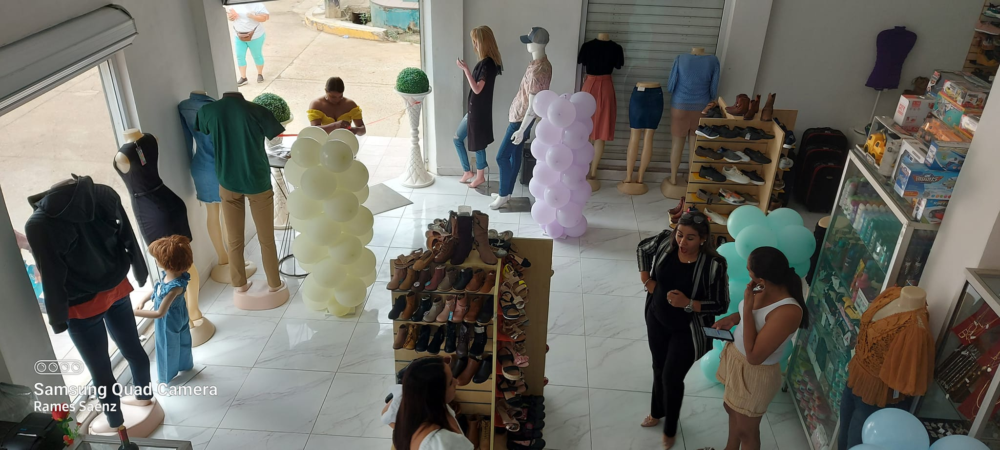

Zapatos que Dejan Huella
Descubre cómo la elección del calzado adecuado puede mejorar tu postura y confianza en el día a día. En Variedades Sumaya te asesoramos.

Historias de emprendimiento, tendencias en calzado y el impacto de Variedades Sumaya en nuestra comunidad.
Leer másDescubre cómo la elección del calzado adecuado puede mejorar tu postura y confianza en el día a día. En Variedades Sumaya te asesoramos.
Desde nuestra fundación, hemos crecido de un pequeño puesto local a ser referentes en Tegucigalpa, apoyando a familias con precios accesibles.
Nuestra misión es democratizar el acceso a calzado de alta calidad, promoviendo el comercio justo y el crecimiento de nuestros colaboradores.
Al comprar en Variedades Sumaya, apoyas directamente a la economía de Honduras y nos permites seguir realizando proyectos sociales.